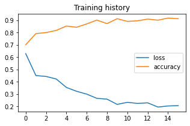

肺結節の良悪性判定¶
https://pytorch.org/tutorials/beginner/blitz/cifar10_tutorial.html
前準備¶
主要パッケージのインポート¶
[1]:
import pathlib
import matplotlib.pyplot as plt
import numpy as np
import pandas as pd
from IPython.display import display
データディレクトリの指定¶
[2]:
DATA_ROOT = pathlib.Path('Data/Images/LIDC_PN')
CLASS_LABELS = ('benign', 'malignant')
IMAGE_EXT = '.png'
画像ファイルを基にpd.DataFrameを作成する¶
画像ファイルは<クラス名>/<ファイル名>の形式でデータディレクトリ内に用意されている
[3]:
def create_dataset_df(data_root, class_labels, image_ext):
dfs = []
for cls, class_label in enumerate(class_labels):
df = pd.DataFrame(
[(str(p), class_label, cls)
for p in data_root.glob(class_label + '/*' + image_ext)],
columns=['filepath', 'class_label', 'class'])
dfs.append(df)
df_dataset = pd.concat(dfs, ignore_index=True)
return df_dataset
df_dataset = create_dataset_df(DATA_ROOT, CLASS_LABELS, IMAGE_EXT)
assert set(CLASS_LABELS) == set(df_dataset['class_label'].unique(
)), 'Discrepancy between CLASS_LABELS and df_dataset'
display(df_dataset)
| filepath | class_label | class | |
|---|---|---|---|
| 0 | Data\Images\LIDC_PN\benign\001.png | benign | 0 |
| 1 | Data\Images\LIDC_PN\benign\002.png | benign | 0 |
| 2 | Data\Images\LIDC_PN\benign\007.png | benign | 0 |
| 3 | Data\Images\LIDC_PN\benign\011.png | benign | 0 |
| 4 | Data\Images\LIDC_PN\benign\012.png | benign | 0 |
| ... | ... | ... | ... |
| 604 | Data\Images\LIDC_PN\malignant\177.png | malignant | 1 |
| 605 | Data\Images\LIDC_PN\malignant\178.png | malignant | 1 |
| 606 | Data\Images\LIDC_PN\malignant\179.png | malignant | 1 |
| 607 | Data\Images\LIDC_PN\malignant\180.png | malignant | 1 |
| 608 | Data\Images\LIDC_PN\malignant\181.png | malignant | 1 |
609 rows × 3 columns
クラスごとの画像数を確認する¶
[4]:
df_dataset['class_label'].value_counts()
[4]:
benign 432
malignant 177
Name: class_label, dtype: int64
画像を表示してみる¶
各クラスからランダムに選択した画像を表示する。
[5]:
from PIL import Image
def show_images_each_class(df, n_rows=2, n_cols=5):
for class_label, group in df.groupby('class_label'):
print(class_label)
for i, row in enumerate(group.sample(n=n_rows * n_cols).itertuples()):
plt.subplot(n_rows, n_cols, i + 1)
image = Image.open(row.filepath)
row.filepath
plt.imshow(image, cmap='gray' if image.mode == 'L' else None)
plt.axis('off')
plt.tight_layout()
plt.show()
show_images_each_class(df_dataset)
benign
malignant
ホールドアウト検証用にデータセットを分割する¶
今回はデータセットの\(\frac{2}{3}\)を学習用、\(\frac{1}{3}\)を評価用に使用する。 分割にはsklearnのStratifiedKFoldを使う。
[6]:
from sklearn.model_selection import StratifiedKFold
K_FOLD = 3
kfold = StratifiedKFold(n_splits=K_FOLD, shuffle=True)
train_index, test_index = next(
kfold.split(df_dataset['filepath'], df_dataset['class']))
df_train = df_dataset.iloc[train_index]
df_test = df_dataset.iloc[test_index]
データを読み込む¶
読み込んだ画像は０から255の値をとるため読み込んだあとに255で割ることで0から1の値をとるようにする
[7]:
IMG_SHAPE = (1, 64, 64)
def load_img(filepath):
img = Image.open(filepath)
img = img.resize(IMG_SHAPE[1:])
return np.atleast_3d(img)
train_data = np.stack(
[load_img(filepath) for filepath in df_train['filepath']])
train_labels = df_train['class'].tolist()
test_data = np.stack([load_img(filepath) for filepath in df_test['filepath']])
test_labels = df_test['class'].tolist()
train_data = (train_data / 255).astype(np.float32)
test_data = (test_data / 255).astype(np.float32)
print('training data', train_data.shape, len(train_labels),
np.mean(train_labels))
print('test data', test_data.shape, len(test_labels), np.mean(test_labels))
training data (406, 64, 64, 1) 406 0.29064039408866993
test data (203, 64, 64, 1) 203 0.29064039408866993
Channels firstに変更¶
画素の並びをChannels lastからChannels first(PyTorchで使われる形式)に変更
[8]:
train_data = np.transpose(train_data, (0, 3, 1, 2))
test_data = np.transpose(test_data, (0, 3, 2, 1))
print(train_data.shape, test_data.shape)
(406, 1, 64, 64) (203, 1, 64, 64)
ネットワーク作成¶
今回は画像サイズが小さいためネットワークを自作する必要があるが、本来は既存のモデルを流用したほうがよい。
[9]:
import torch
import torch.nn as nn
class SimpleCNN(nn.Module):
class ConvBNReLU(nn.Module):
def __init__(self, in_chs, out_chs, kernel_size=3):
super().__init__()
self.block = nn.Sequential(
nn.Conv2d(in_chs, out_chs, kernel_size=kernel_size),
nn.BatchNorm2d(out_chs), nn.ReLU(inplace=True),
nn.Conv2d(out_chs, out_chs, kernel_size=kernel_size),
nn.BatchNorm2d(out_chs), nn.ReLU(inplace=True))
def forward(self, x):
return self.block(x)
def __init__(self):
super().__init__()
self.network = nn.Sequential(self.ConvBNReLU(1, 4), nn.MaxPool2d(2),
self.ConvBNReLU(4, 8), nn.MaxPool2d(2),
self.ConvBNReLU(8, 16), nn.MaxPool2d(2),
nn.Dropout(.25), nn.Flatten(start_dim=1),
nn.Linear(256, 32), nn.ReLU(inplace=True),
nn.Linear(32, 1))
def forward(self, x):
return self.network(x)
net = SimpleCNN()
from torchsummary import summary
summary(net, IMG_SHAPE, verbose=0, device='cpu')
[9]:
==========================================================================================
Layer (type:depth-idx) Output Shape Param #
==========================================================================================
├─Sequential: 1-1 [-1, 1] --
| └─ConvBNReLU: 2-1 [-1, 4, 60, 60] --
| | └─Sequential: 3-1 [-1, 4, 60, 60] 204
| └─MaxPool2d: 2-2 [-1, 4, 30, 30] --
| └─ConvBNReLU: 2-3 [-1, 8, 26, 26] --
| | └─Sequential: 3-2 [-1, 8, 26, 26] 912
| └─MaxPool2d: 2-4 [-1, 8, 13, 13] --
| └─ConvBNReLU: 2-5 [-1, 16, 9, 9] --
| | └─Sequential: 3-3 [-1, 16, 9, 9] 3,552
| └─MaxPool2d: 2-6 [-1, 16, 4, 4] --
| └─Dropout: 2-7 [-1, 16, 4, 4] --
| └─Flatten: 2-8 [-1, 256] --
| └─Linear: 2-9 [-1, 32] 8,224
| └─ReLU: 2-10 [-1, 32] --
| └─Linear: 2-11 [-1, 1] 33
==========================================================================================
Total params: 12,925
Trainable params: 12,925
Non-trainable params: 0
Total mult-adds (M): 1.63
==========================================================================================
Input size (MB): 0.02
Forward/backward pass size (MB): 0.68
Params size (MB): 0.05
Estimated Total Size (MB): 0.75
==========================================================================================
ネットワーク構造の可視化¶
PyTorch本体にはネットワーク構造可視化の機能はないのでPyTorchVizを使う
[10]:
import torchviz
dummy_x = torch.zeros(1, *IMG_SHAPE, dtype=torch.float, requires_grad=False)
dummy_y = net(dummy_x)
dot = torchviz.make_dot(dummy_y)
dot.format = 'svg'
dot
[10]:
デバイスの設定¶
cudaが使える環境ではcudaを、それ以外の環境ではCPUを使う。
ネットワークと入出力の両方を
to(device)でdeviceに移動する必要がある。[11]:
device = torch.device("cuda:0" if torch.cuda.is_available() else "cpu")
net.to(device)
device
[11]:
device(type='cuda', index=0)
損失関数とOptimizer¶
[12]:
import torch.optim as optim
criterion = torch.nn.BCEWithLogitsLoss()
optimizer = optim.Adam(net.parameters(), lr=0.01)
DataLoaderの作成¶
DataLoaderはデータをmini batchに分割する。(他の機能は今回は使わない)
[13]:
train_data = torch.from_numpy(train_data).to(device)
train_labels = torch.FloatTensor(train_labels).to(device)
train_dataset = torch.utils.data.TensorDataset(train_data, train_labels)
test_data = torch.from_numpy(test_data).to(device)
test_labels = torch.FloatTensor(test_labels).to(device)
test_dataset = torch.utils.data.TensorDataset(test_data, test_labels)
[14]:
import os
BATCH_SIZE = 8
NUM_WORKERS = 0 if os.name == 'nt' else 2
trainloader = torch.utils.data.DataLoader(train_dataset,
batch_size=BATCH_SIZE,
shuffle=True,
num_workers=NUM_WORKERS)
testloader = torch.utils.data.DataLoader(test_dataset,
batch_size=BATCH_SIZE,
shuffle=False,
num_workers=NUM_WORKERS)
学習¶
注意: 今回、epoch数は決め打ちしてありますが、本来はvalidationデータを用いて学習を終了させる必要があります。
[15]:
import sklearn.metrics as metrics
EPOCHS = 16
logs = []
for epoch in range(EPOCHS):
epoch_logs = []
for i, data in enumerate(trainloader):
inputs, labels = data
optimizer.zero_grad()
outputs = net(inputs)
labels = labels.view(-1, 1)
loss = criterion(outputs, labels)
loss.backward()
optimizer.step()
with torch.no_grad():
acc = metrics.accuracy_score(
(labels.cpu().numpy()).astype(np.uint8),
(torch.sigmoid(outputs) > .5).cpu().numpy().astype(np.uint8))
epoch_logs.append((loss.item(), acc))
means = [np.mean(v) for v in zip(*epoch_logs)]
print(epoch + 1, means)
logs.append(means)
print('Finish Training')
1 [0.6284318507886401, 0.7001633986928105]
2 [0.4502704415251227, 0.7908496732026145]
3 [0.4431070437033971, 0.7990196078431373]
4 [0.4224901628114429, 0.8161764705882353]
5 [0.3539216709049309, 0.852124183006536]
6 [0.32284164034268437, 0.8423202614379085]
7 [0.29961798833135295, 0.869281045751634]
8 [0.26530590741073384, 0.9003267973856208]
9 [0.25872835867545185, 0.8717320261437909]
10 [0.2162282999020581, 0.9117647058823529]
11 [0.233091899650354, 0.8897058823529411]
12 [0.22418282692338906, 0.8946078431372549]
13 [0.22900151074224828, 0.9084967320261438]
14 [0.19482114122194402, 0.8995098039215687]
15 [0.20342960776578561, 0.9166666666666666]
16 [0.20640618440366404, 0.9117647058823529]
Finish Training
学習履歴の可視化¶
[16]:
pd.DataFrame(logs, columns=['loss', 'accuracy']).plot(title='Training history',
figsize=(5, 3))
plt.show()

評価¶
混同行列¶
学習データでの評価¶
学習できているかを確認するため。
[17]:
from sklearn import metrics
def evaluate(model, data, labels):
with torch.no_grad():
predictions = torch.sigmoid(model(data)).cpu().numpy().squeeze()
y_pred = predictions > .5
df_result = pd.DataFrame({
'truth': labels,
'pred_proba': predictions,
'pred_class': y_pred
})
cm = metrics.confusion_matrix(df_result['truth'], df_result['pred_class'])
df_cm = pd.DataFrame(cm, index=CLASS_LABELS, columns=CLASS_LABELS)
df_cm.index.name, df_cm.columns.name = 'Truth', 'Prediction'
display(df_cm)
print('Accuracy = {n} / {d} = {a:.03g}%'.format(n=cm.trace(),
d=cm.sum(),
a=100 * cm.trace() /
cm.sum()))
return df_result
net.eval()
train_result = evaluate(net, train_data, train_labels.cpu())
| Prediction | benign | malignant |
|---|---|---|
| Truth | ||
| benign | 274 | 14 |
| malignant | 9 | 109 |
Accuracy = 383 / 406 = 94.3%
テストデータでの評価¶
[18]:
test_result = evaluate(net, test_data, test_labels.cpu())
| Prediction | benign | malignant |
|---|---|---|
| Truth | ||
| benign | 126 | 18 |
| malignant | 8 | 51 |
Accuracy = 177 / 203 = 87.2%
ROCカーブ¶
[19]:
fpr, tpr, thresholds = metrics.roc_curve(test_result['truth'],
test_result['pred_proba'])
auc = metrics.auc(fpr, tpr)
plt.figure(figsize=(3, 3))
plt.plot(fpr, tpr, label='AUC = {auc:.03g}'.format(auc=auc))
plt.plot((0, 1), (0, 1), zorder=0, color='black', alpha=.1,
linestyle='-') # diagonal line
plt.xlabel('1 - Specificity')
plt.ylabel('Sensitivity')
plt.legend(loc='lower right')
plt.show()